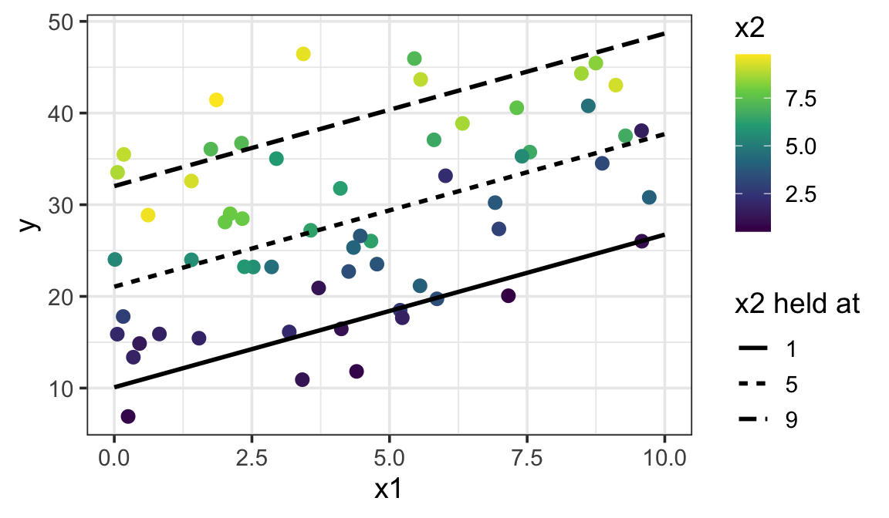
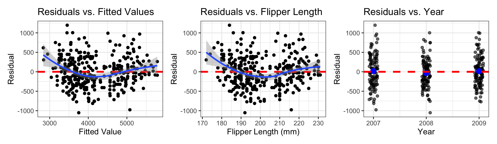
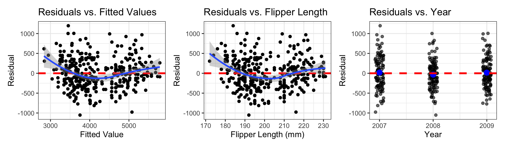
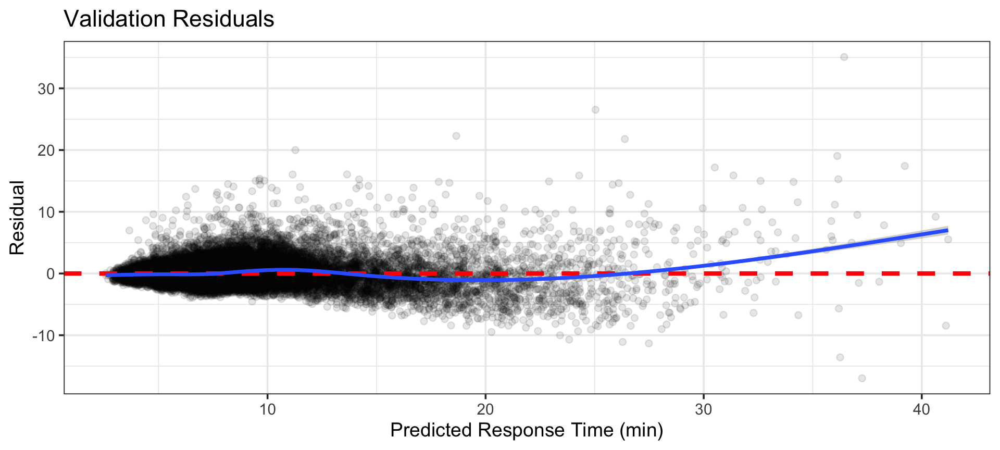

November 28, 2026
The Statistical Learning Setting
The Machine Learning Setting
In multiple linear regression, we seek to explain/predict a numerical outcome (y), using two or more numerical explanatory/predictor variables (x1, x2, …, xk).
Our models are of the form:
\[\mathbb{E}\left[y\right] = \beta_0 + \beta_1 x_1 + \beta_2 x_2 + \cdots + \beta_k x_k\]
With one predictor, the model is a line. With two predictors it is a plane, and with more it is a hyperplane – a flat surface that we can’t picture but can still fit.
The coefficient \(\beta_j\) is the expected change in y given a unit increase in \(x_j\), holding all of the other predictors fixed.
The plot shows this idea for two predictors. Each line is the model’s prediction as x1 changes, with x2 held at a fixed value. The lines are parallel – they share the same slope for x1.

We’ll begin in the statistical learning setting before exploring multiple linear regression in the machine learning setting.
Most of what we learned in simple linear regression carries over. Four things are new:
We’ve defined the statistical learning setting to be one where we come to our modeling scenarios with a pre-determined model form and our primary goal is inference (interpretation).
The Data: We’re using data collected on penguins observed near Palmer Research Station in Antarctica. Two penguins are missing measurements, so we’re working with the 342 complete observations.
| species | bill_length_mm | bill_depth_mm | flipper_length_mm | body_mass_g | year |
|---|---|---|---|---|---|
| Adelie | 39.1 | 18.7 | 181 | 3750 | 2007 |
| Adelie | 39.5 | 17.4 | 186 | 3800 | 2007 |
| Adelie | 40.3 | 18.0 | 195 | 3250 | 2007 |
| Adelie | 36.7 | 19.3 | 193 | 3450 | 2007 |
| Adelie | 39.3 | 20.6 | 190 | 3650 | 2007 |
| Adelie | 38.9 | 17.8 | 181 | 3625 | 2007 |
Objective: Today we’re seeking to understand how penguin body mass is related to flipper length, bill length, bill depth, and year – all at once.
A Note on Year: Ultimately, year will be a categorical variable because it’s got so few observed levels (just 2007, 2008, and 2009) and we’ll eventually treat it that way. For today, we’ll treat it as numeric.
Hypotheses: We believe that penguin body mass (body_mass_g) is linearly associated with penguin flipper length (flipper_length_mm), bill length (bill_length_mm), bill depth (bill_depth_mm), and year (year).
Corresponding Model: Let \(x_1\), \(x_2\), \(x_3\), and \(x_4\) denote flipper length, bill length, bill depth, and year, respectively. Then,
\[\mathbb{E}\left[\text{body mass}\right] = \beta_0 + \beta_1 x_1 + \beta_2 x_2 + \beta_3 x_3 + \beta_4 x_4\]
Does the model have any explanatory value at all?
\[\begin{array}{lcl} H_0 & : & \beta_1 = \beta_2 = \beta_3 = \beta_4 = 0\\ H_a & : & \text{At least one of the coefficient } \beta \text{s is non-zero}\end{array}\]
Does this term add explanatory value, given the other terms?
\[\begin{array}{l} H_0 : \beta_i = 0\\ H_a : \beta_i \neq 0\end{array}~~~\text{for}~~~i = 1, 2, 3, 4\]
Note: In simple linear regression, the global test and the term-based test were identical. That is no longer the case – now we get to ask both a global and a local question.
The {tidymodels} workflow is unchanged. The only difference is that the recipe has several predictors, separated by +.
| r.squared | adj.r.squared | sigma | statistic | p.value | df | logLik | AIC | BIC | deviance | df.residual | nobs |
|---|---|---|---|---|---|---|---|---|---|---|---|
| 0.7731443 | 0.7704516 | 384.2261 | 287.1314 | 0 | 4 | -2518.08 | 5048.159 | 5071.168 | 49751210 | 337 | 342 |
| term | estimate | std.error | statistic | p.value |
|---|---|---|---|---|
| (Intercept) | 210420.094942 | 52074.78616 | 4.0407289 | 0.0000661 |
| flipper_length_mm | 52.155836 | 2.46140 | 21.1894986 | 0.0000000 |
| bill_length_mm | 2.184324 | 5.22637 | 0.4179428 | 0.6762551 |
| bill_depth_mm | 23.906439 | 13.40646 | 1.7832034 | 0.0754531 |
| year | -108.167351 | 25.97470 | -4.1643356 | 0.0000397 |
Global Test for Model Utility: The p-value is essentially zero, which is below \(0.05\). The data suggests our model has some utility.
Term-Based Tests: The data provide evidence that flipper_length_mm and year have explanatory value, given the other terms in the model. The evidence for bill_length_mm (p-value \(\approx 0.676\)) and bill_depth_mm (p-value \(\approx 0.075\)) is lacking.
Next Action: The Global Test says the model is useful, but some of our explanatory variables are not statistically significant. We’ll reduce the model by removing the term with the least evidence for inclusion – the one with the highest p-value, bill_length_mm.
| r.squared | adj.r.squared | sigma | statistic | p.value | df | logLik | AIC | BIC | deviance | df.residual | nobs |
|---|---|---|---|---|---|---|---|---|---|---|---|
| 0.7731443 | 0.7704516 | 384.2261 | 287.1314 | 0 | 4 | -2518.08 | 5048.159 | 5071.168 | 49751210 | 337 | 342 |
| term | estimate | std.error | statistic | p.value |
|---|---|---|---|---|
| (Intercept) | 210420.094942 | 52074.78616 | 4.0407289 | 0.0000661 |
| flipper_length_mm | 52.155836 | 2.46140 | 21.1894986 | 0.0000000 |
| bill_length_mm | 2.184324 | 5.22637 | 0.4179428 | 0.6762551 |
| bill_depth_mm | 23.906439 | 13.40646 | 1.7832034 | 0.0754531 |
| year | -108.167351 | 25.97470 | -4.1643356 | 0.0000397 |
A Curious Detail: In simple linear regression, bill depth was negatively associated with body mass. In this model, its coefficient is positive. A coefficient’s value and sign depend on which other terms are in the model!
We’ll drop bill_length_mm and refit. Dropping a term changes everything – every coefficient, standard error, test statistic, and p-value – which is why we only ever drop one term at a time.
\[\mathbb{E}\left[\text{body mass}\right] = \beta_0 + \beta_1 x_1 \cancel{+ \beta_2 x_2} + \beta_3 x_3 + \beta_4 x_4\]
\[\begin{array}{lcl} H_0 & : & \beta_1 \cancel{= \beta_2} = \beta_3 = \beta_4 = 0\\ H_a & : & \text{At least one remaining } \beta \text{ is non-zero}\end{array}\]
| r.squared | adj.r.squared | sigma | statistic | p.value | df.residual | nobs |
|---|---|---|---|---|---|---|
| 0.773 | 0.771 | 383.757 | 383.721 | < 0.001 | 338 | 342 |
| term | estimate | std.error | statistic | p.value |
|---|---|---|---|---|
| (Intercept) | 212336.500 | 51809.148 | 4.098 | < 0.001 |
| flipper_length_mm | 52.835 | 1.846 | 28.622 | < 0.001 |
| bill_depth_mm | 25.287 | 12.977 | 1.949 | 0.052 |
| year | -109.154 | 25.836 | -4.225 | < 0.001 |
Results: The global test still indicates model utility. The p-value for bill_depth_mm changed from about \(0.075\) to about \(0.052\) – it’s still above \(0.05\), though only barely. This is a close call, but we’ll stick with our \(0.05\) threshold and remove bill_depth_mm next.
We’ll drop bill_depth_mm and refit.
\[\mathbb{E}\left[\text{body mass}\right] = \beta_0 + \beta_1 x_1 \cancel{+ \beta_2 x_2} \cancel{+ \beta_3 x_3} + \beta_4 x_4\]
\[\begin{array}{lcl} H_0 & : & \beta_1 \cancel{= \beta_2} \cancel{= \beta_3} = \beta_4 = 0\\ H_a & : & \text{At least one remaining } \beta \text{ is non-zero}\end{array}\]
| r.squared | adj.r.squared | sigma | statistic | p.value | df.residual | nobs |
|---|---|---|---|---|---|---|
| 0.77 | 0.769 | 385.337 | 568.988 | < 0.001 | 339 | 342 |
| term | estimate | std.error | statistic | p.value |
|---|---|---|---|---|
| (Intercept) | 208300.559 | 51980.840 | 4.007 | < 0.001 |
| flipper_length_mm | 50.738 | 1.506 | 33.695 | < 0.001 |
| year | -106.718 | 25.912 | -4.119 | < 0.001 |
Conclusion: Every remaining term is statistically significant, given the other term in the model, so we stop reducing. Our final model uses flipper_length_mm and year.
P-values for each term, at each step:
| term | Full Model | Step 1: Without Bill Length | Step 2: Without Bill Length and Bill Depth |
|---|---|---|---|
| flipper_length_mm | < 0.001 | < 0.001 | < 0.001 |
| bill_length_mm | 0.676 | -- | -- |
| bill_depth_mm | 0.075 | 0.052 | -- |
| year | < 0.001 | < 0.001 | < 0.001 |
Overall fit at each step:
| Model | adj.r.squared | sigma |
|---|---|---|
| Full Model | 0.770 | 384.226 |
| Step 1: Without Bill Length | 0.771 | 383.757 |
| Step 2: Without Bill Length and Bill Depth | 0.769 | 385.337 |
Removing the unneeded terms barely changed the adjusted R-squared or sigma. We now have a simpler model that explains the data about as well as the larger one.
A Caution: Bill length and bill depth aren’t “useless” – each is associated with body mass on its own. They just add little once flipper length and year are already in the model. Also, because we let the data choose which terms to keep, the final model’s p-values and intervals are somewhat optimistic. In a true statistical learning study, we’d hope to specify the model before looking at the data.
With our final model in hand, let’s check the assumptions that accompany multiple linear regression.
The first four are the same as in simple linear regression:
And we have two additional concerns for multiple regression:
With more than one predictor, we can’t see the model in a single scatterplot. Instead, we plot the residuals against the fitted values and against each predictor.
lr_aug <- lr_fit |>
augment(penguins)
p_fit <- lr_aug |>
ggplot() +
geom_point(aes(x = .pred, y = .resid)) +
geom_hline(yintercept = 0,
color = "red",
linetype = "dashed",
linewidth = 1.5) +
geom_smooth(aes(x = .pred, y = .resid),
se = TRUE) +
labs(title = "Residuals vs. Fitted Values",
x = "Fitted Value",
y = "Residual")p_flip <- lr_aug |>
ggplot() +
geom_point(aes(x = flipper_length_mm, y = .resid)) +
geom_hline(yintercept = 0,
color = "red",
linetype = "dashed",
linewidth = 1.5) +
geom_smooth(aes(x = flipper_length_mm, y = .resid),
se = TRUE) +
labs(title = "Residuals vs. Flipper Length",
x = "Flipper Length (mm)",
y = "Residual")p_year <- lr_aug |>
ggplot(aes(x = year, y = .resid)) +
geom_point(position = position_jitter(width = 0.08, height = 0),
alpha = 0.6) +
stat_summary(fun = mean, geom = "point", color = "blue", size = 4) +
geom_hline(yintercept = 0,
color = "red",
linetype = "dashed",
linewidth = 1.5) +
scale_x_continuous(breaks = c(2007, 2008, 2009)) +
labs(title = "Residuals vs. Year",
x = "Year",
y = "Residual")
With more than one predictor, we can’t see the model in a single scatterplot. Instead, we plot the residuals against the fitted values and against each predictor.

Linearity: There is a gentle U-shape in the first two plots – residuals tend to be positive for the smallest and largest fitted values and negative in the middle. The curve is mild compared to the size of a typical residual (about 385g), so this is a modest concern. Residuals for each year are centered near zero.
Equal Variance: The vertical spread looks roughly constant, perhaps slightly tighter at the extremes (a faint bow-tie, like we saw last time). We don’t see evidence of a severe violation.
Independence of residuals is generally about how the data were collected or generated.
The same concerns we noted last time apply here:
Including year in the model accounts for some of the time-related structure. It does nothing for the differences between locations (islands) or subgroups (species) though, so we should still suspect some dependence among the residuals.
We’ll need a more inclusive model to address this. For now, we’ll acknowledge the concern and move on.
The residuals look approximately normal, with perhaps a slight right skew. The Q-Q plot doesn’t show substantial deviation from the theoretical quantiles (red line). We don’t see evidence of a severe violation.
Multicollinearity: Variance inflation factors (VIFs) measure how much each term’s standard error is inflated by overlap with the other terms. Values above about 5 to 10 are cause for concern.
lr_fit |>
extract_fit_engine() |>
car::vif() |>
enframe(name = "term", value = "VIF") |>
kable(digits = 2) |>
kable_styling(font_size = 16)| term | VIF |
|---|---|
| flipper_length_mm | 1.03 |
| year | 1.03 |
Both VIFs are essentially 1, so there is no concern here. (Flipper length did overlap with the bill measurements in the full model – one reason those terms added little.)
Influential Observations: Cook’s distance measures how much the fit would change if an observation were removed.
lr_fit |>
extract_fit_engine() |>
augment(penguins) |>
arrange(desc(.cooksd)) |>
select(flipper_length_mm, year, .hat, .cooksd) |>
head(n = 3) |>
kable(digits = 3) |>
kable_styling(font_size = 16)| flipper_length_mm | year | .hat | .cooksd |
|---|---|---|---|
| 184 | 2007 | 0.011 | 0.035 |
| 221 | 2007 | 0.016 | 0.034 |
| 216 | 2007 | 0.013 | 0.028 |
The largest Cook’s distance is only about 0.035, far below common concern thresholds (like \(0.5\) or \(1\)). No single penguin is driving our results.
None of the assumptions for multiple linear regression were severely violated, and we found no multicollinearity or influential-observation problems in the final model.
We did note a few things to be transparent about:
We didn’t find evidence for severe violations, so we can trust our statistical analysis as long as we maintain some level of skepticism – especially since the data helped us decide which terms to keep.
| r.squared | adj.r.squared | sigma | statistic | p.value | df | logLik | AIC | BIC | deviance | df.residual | nobs |
|---|---|---|---|---|---|---|---|---|---|---|---|
| 0.770477 | 0.7691229 | 385.3365 | 568.9881 | 0 | 2 | -2520.078 | 5048.157 | 5063.496 | 50336156 | 339 | 342 |
The F-statistic and corresponding p-value indicate that our model has explanatory value.
The R-squared value indicates that approximately 77% of the variability in penguin body masses is explained by linear relationships with flipper length and year.
The sigma value indicates that, on the data our model was trained on, our typical residual (prediction error) is approximately 385.3 grams.
Compared to Simple Linear Regression: Using flipper length alone, the adjusted R-squared was 75.8% and sigma was 394.3 grams. Adding year helped, but only a little.
| term | estimate | std.error | statistic | p.value | conf.low | conf.high |
|---|---|---|---|---|---|---|
| (Intercept) | 208300.55855 | 51980.839596 | 4.007257 | 0.0000756 | 106054.95085 | 310546.16626 |
| flipper_length_mm | 50.73784 | 1.505803 | 33.694879 | 0.0000000 | 47.77595 | 53.69973 |
| year | -106.71797 | 25.911631 | -4.118535 | 0.0000480 | -157.68580 | -55.75014 |
The estimated model is:
\[\mathbb{E}\left[\text{body mass}\right] \approx 208300.6 + 50.74\cdot x_1 - 106.72\cdot x_4\]
where \(x_1\) is flipper length and \(x_4\) is year.
Intercept: The intercept would be the average body mass of a penguin with a 0mm flipper length in the year 0. That is meaningless – and doubly an extrapolation, since our flipper lengths are all between 172mm and 231mm and our years are 2007 to 2009.
Flipper Length: Holding year fixed, we expect a one millimeter increase in flipper length to be associated with an increase in average body mass of about 50.7g. The 95% confidence bounds indicate that the increase is between 47.8g and 53.7g.
Year: Holding flipper length fixed, we expect each additional year to be associated with a decrease in average body mass of about 106.7g (between 55.8g and 157.7g). Be careful with this one – we only have three distinct years, treating year as numeric assumes the same change from year to year, and year may be standing in for other differences between penguins that we haven’t modeled.
Checking Intuition: The positive flipper length coefficient matches our expectation. We didn’t have a strong expectation about year, so this is a result we’d want to investigate further before believing it.
We’ve defined the machine learning setting to be one where we come to our modeling scenarios from an exploratory standpoint and where our primary goal is prediction.
The Data: We’re using data collected on emergency medical response times.
| call_id | hour | priority | distance_mi | station_units | traffic_index | active_incidents | short_crew | response_time_min |
|---|---|---|---|---|---|---|---|---|
| C000001 | 0 | 1 | 2.27 | 2 | 0.223 | 3 | 0 | 7.88 |
| C000002 | 0 | 2 | 0.58 | 3 | 0.163 | 3 | 0 | 5.97 |
| C000003 | 1 | 3 | 4.61 | 2 | 0.053 | 1 | 1 | 16.36 |
Objective: We’re seeking to predict how long an EMS team will take to arrive on the scene of an emergency, from the instant a 911 call is placed.
A Note on Approach: Last time we built a simple linear regression benchmark using only distance. Multiple linear regression is a natural next step: it is fast to fit and can make use of many predictors at once. It also makes a respectable baseline against which more flexible models are compared.
We’ll compare our new multiple linear regression model against last time’s simple linear regression benchmark. Our goal is to see whether adding predictors improves performance on validation data.
Our objective is to predict response time from the instant a 911 call is placed. That means every predictor must be something we would know at that moment.
Watch out for leakage. Three columns in this data set are components of the response:
ems |>
mutate(rebuilt = (dispatch_sec + turnout_sec)/60 +
travel_min) |>
summarize(max_abs_difference =
max(abs(response_time_min - rebuilt))) |>
kable(digits = 4) |>
kable_styling(font_size = 16)| max_abs_difference |
|---|
| 0.0033 |
The response time is exactly dispatch_sec plus turnout_sec (converted to minutes) plus travel_min, up to rounding. A model using them would look fantastic and be useless – we won’t know them until after the call is over.
Handling missing values is a topic for later. For now we’ll stick to predictors that are complete.
Watch out for missing values. Some potential predictors have missing observations:
ems |>
select(distance_mi, priority, station_units,
active_incidents, short_crew,
traffic_index, units_available,
visibility_mi) |>
summarize(across(everything(), \(x) sum(is.na(x)))) |>
pivot_longer(everything(),
names_to = "variable",
values_to = "missing") |>
kable() |>
kable_styling(font_size = 16)| variable | missing |
|---|---|
| distance_mi | 0 |
| priority | 0 |
| station_units | 0 |
| active_incidents | 0 |
| short_crew | 0 |
| traffic_index | 5932 |
| units_available | 3886 |
| visibility_mi | 13504 |
We’ll split the data in exactly the same way we did last time – same seed, same proportions. That means our training and validation observations are identical to those used for the simple linear regression benchmark, so comparing the two models is fair.
As before, the test set stays locked away until we’ve settled on a final model.
Exploratory data analysis happens on the training data only. Here are the correlations between the response and several candidate predictors that are complete and known at call time:
train |>
select(response_time_min, distance_mi, station_units,
priority, short_crew, active_incidents,
is_weekend, hour) |>
cor() |>
as_tibble(rownames = "variable") |>
select(variable, response_time_min) |>
filter(variable != "response_time_min") |>
arrange(desc(abs(response_time_min))) |>
kable(digits = 3) |>
kable_styling(font_size = 16)| variable | response_time_min |
|---|---|
| distance_mi | 0.840 |
| station_units | -0.398 |
| priority | 0.293 |
| short_crew | 0.111 |
| active_incidents | 0.062 |
| is_weekend | -0.048 |
| hour | -0.016 |
Distance is by far the strongest. station_units and priority are moderately associated, and short_crew and active_incidents are weak on their own.
We’ll include distance, priority, station units, active incidents, and short crew. A predictor that looks weak by itself can still help once the others are in the model, and the validation data will tell us whether the extra predictors are worth it.
Note that priority (1, 2, or 3) and short_crew (0 or 1) are coded as numbers. Like year, we’ll treat them as numeric for now.
We’ll refit last time’s simple linear regression benchmark, then fit our multiple linear regression model – both using only the training data.
lr_spec <- linear_reg() |>
set_engine("lm")
#Last time's simple linear regression benchmark
slr_rec <- recipe(response_time_min ~ distance_mi, data = train)
slr_wf <- workflow() |>
add_model(lr_spec) |>
add_recipe(slr_rec)
slr_fit <- slr_wf |>
fit(train)
#Our new multiple linear regression model
mlr_rec <- recipe(response_time_min ~ distance_mi +
priority +
station_units +
active_incidents +
short_crew,
data = train)
mlr_wf <- workflow() |>
add_model(lr_spec) |>
add_recipe(mlr_rec)
mlr_fit <- mlr_wf |>
fit(train)As before, we’ll measure performance with RMSE on both the training (in sample) and validation (out of sample) data.
The training and validation metrics are close to one another, so the model is not overfitting. That’s not surprising – we have roughly 160,000 training observations and only five predictors.
RMSE, in minutes:
| Model | Training | Validation |
|---|---|---|
| Simple Linear Regression (distance only) | 2.368 | 2.401 |
| Multiple Linear Regression (five predictors) | 1.955 | 1.997 |
On validation data, our typical prediction error fell from about 2.40 minutes to about 2.00 minutes – an improvement of roughly 17%.
A Reminder: Adding predictors can never make training performance worse, so training RMSE alone can’t tell us whether extra predictors are worth including. It’s the improvement on the validation data that matters.
The multiple linear regression model clearly beats our simple benchmark. But how good is “about 2.0 minutes”? Let’s look at the residuals.
Our “typical error” number is only trustworthy if the spread of the errors is about the same for every prediction. Let’s see…

The residuals are centered close to zero across the range, but their spread grows steadily as the predicted response time grows – a fan shape. There are also many more large positive residuals (under-predictions) than large negative ones. This is partly because response time can’t go below zero.
Let’s quantify that fan, using the validation data:
| Predicted Time (min) | Observations | Typical Error (RMSE) |
|---|---|---|
| [2.59,5.73] | 6000 | 1.07 |
| (5.73,6.98] | 6002 | 1.35 |
| (6.98,8.19] | 5998 | 1.63 |
| (8.19,10.1] | 6000 | 1.98 |
| (10.1,41.2] | 6000 | 3.23 |
The constant variance assumption is violated. A single “typical error” of about 2.0 minutes is too pessimistic for the shortest predicted responses and far too optimistic for the longest, so any intervals we build from it will not be trustworthy. We have more work to do!
Multiple linear regression models a numerical response using two or more numerical predictors: \(\mathbb{E}\left[y\right] = \beta_0 + \beta_1 x_1 + \cdots + \beta_k x_k\). Each coefficient is interpreted holding the other predictors fixed.
In the statistical learning setting, we hypothesized a model for penguin body mass using flipper length, bill length, bill depth, and year. The global test and the term-based tests are no longer the same test. We reduced the model one term at a time – dropping bill length, then bill depth – until every remaining term was significant, and we checked the assumptions (including multicollinearity and influence) on the final model. The final model suggests that, holding the other term fixed, longer flippers are associated with greater body mass and later years with lower body mass.
In the machine learning setting, we used only predictors we would know at call time (avoiding leakage) and complete predictors (avoiding missing values). We trained a five-predictor model for EMS response time on the same training data as last time, and it beat our simple linear regression benchmark on the validation data. The residuals still showed a fan shape, so there is room to improve.
The new benchmark: A validation RMSE of about 2.0 minutes is the number future models will need to beat.
Interpreting Model Coefficients and Predictions